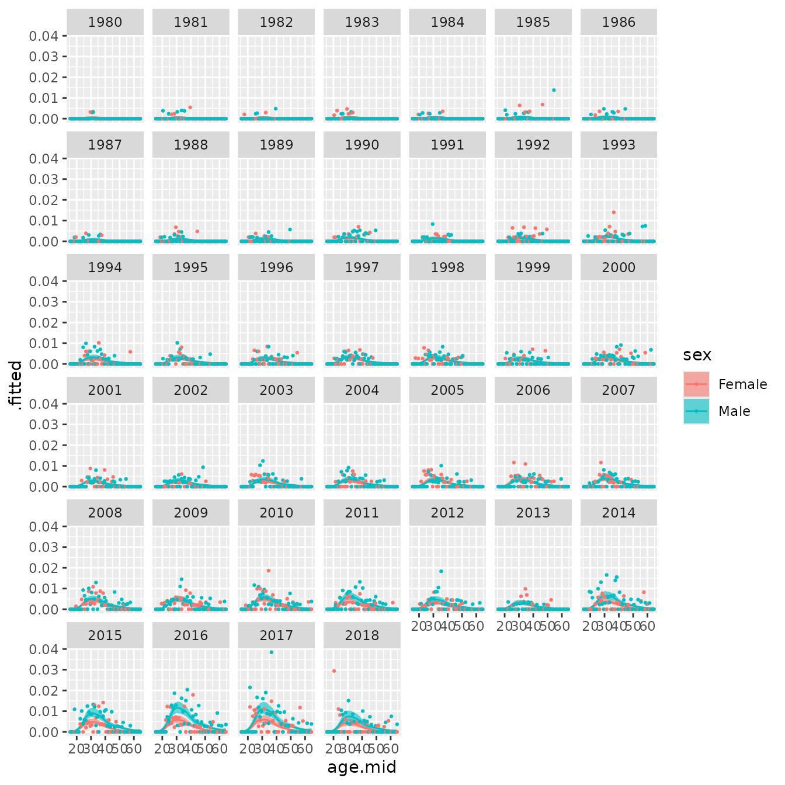
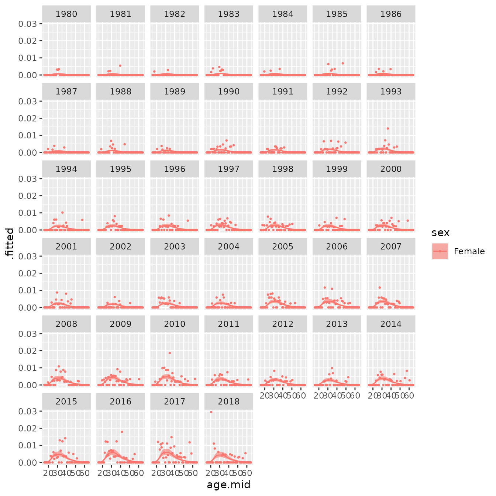
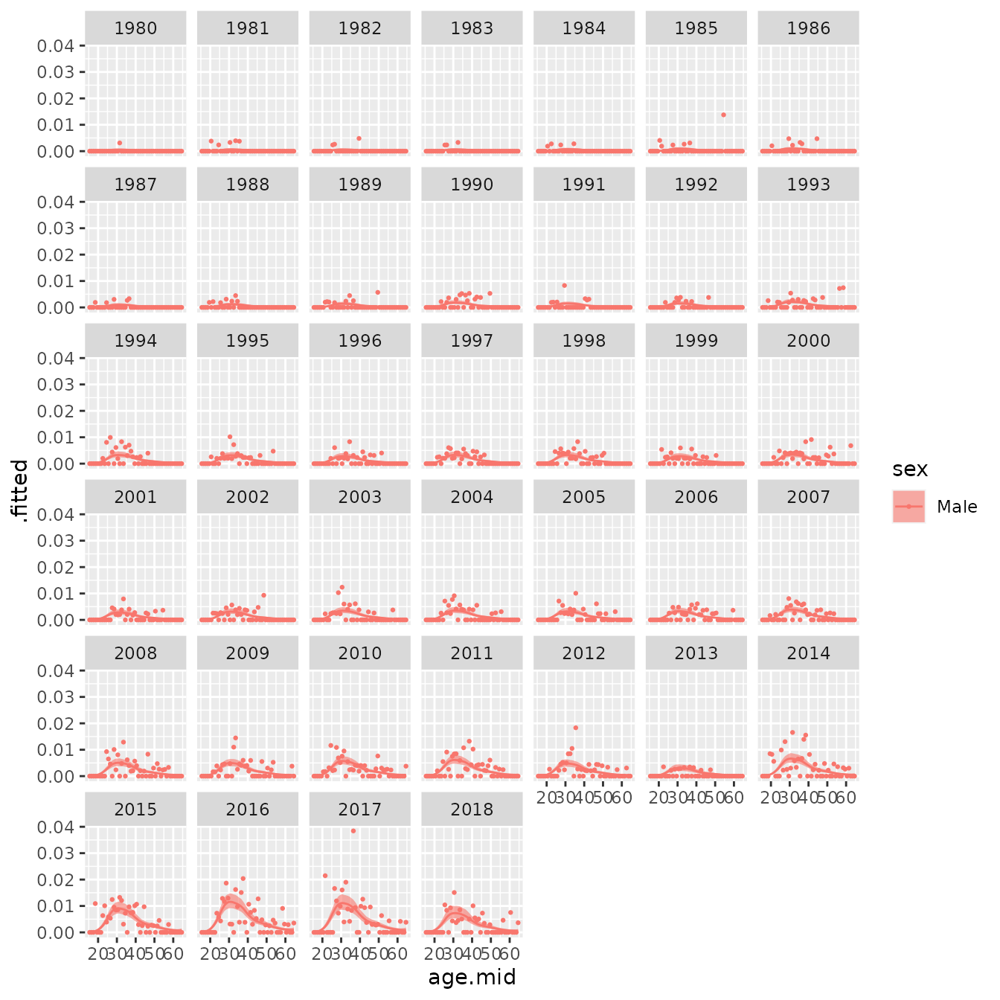
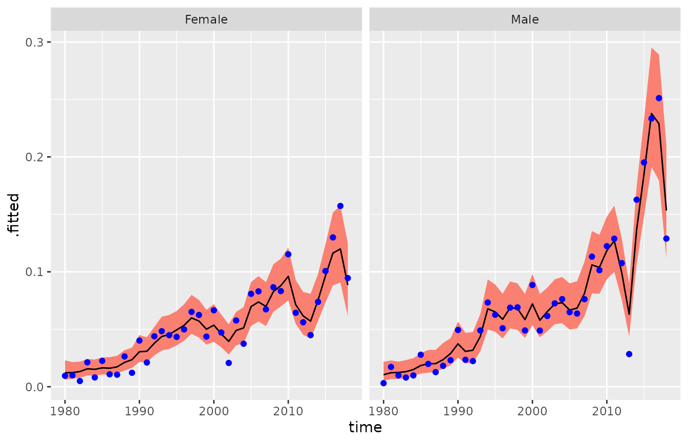
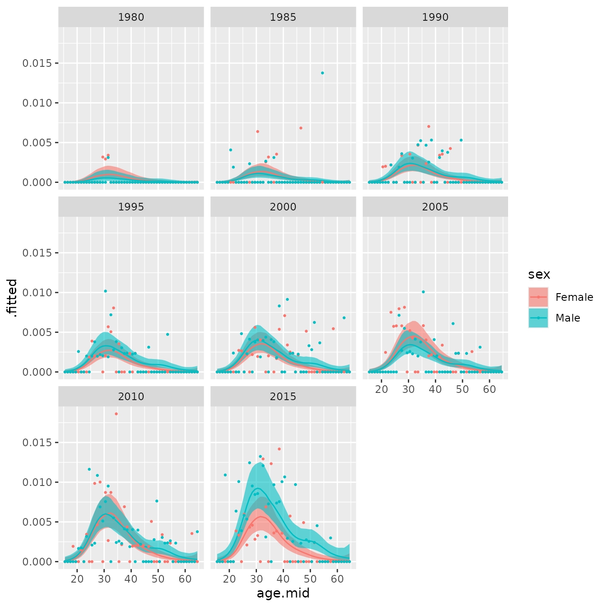
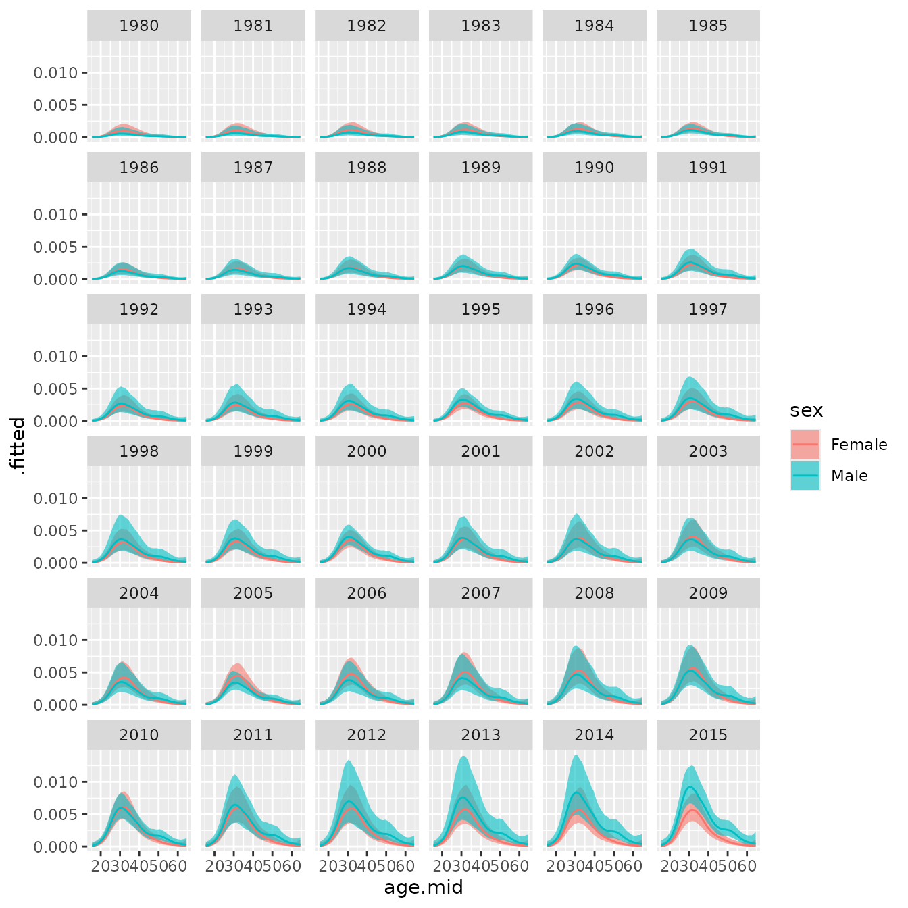
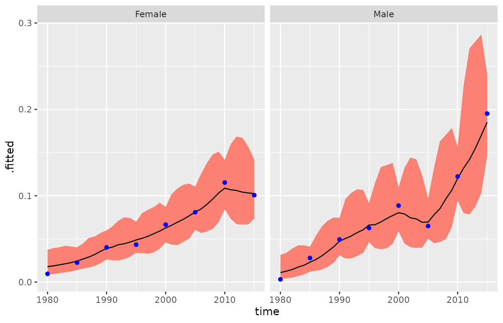

vig2_cn
vig2_cn.RmdIn this example, we have the number of divorces and person-years of exposure for China by single year of age (15, …, 64), sex, and year (1980, …, 2018). The values of the person-years of exposure are small and thus sampling error is quite large. We use the BayesRates package to obtain smoothed estimates of the divorce rates.
library(BayesRates)
#> Error in get(paste0(generic, ".", class), envir = get_method_env()) :
#> object 'type_sum.accel' not found
library(dplyr)
#>
#> Attaching package: 'dplyr'
#> The following objects are masked from 'package:stats':
#>
#> filter, lag
#> The following objects are masked from 'package:base':
#>
#> intersect, setdiff, setequal, union
library(ggplot2)‘cn_divorces’ is an existing data frame in the BayesRates
package with four columns:
(1) ‘age’: an integer variable with levels being 15,…,64;
(2) ‘sex’: a character variable with possible values being “Female” and
“Male”;
(3) ‘time’: an integer variable with possible values being
1980,…,2018;
(4) ‘nevent’: a numeric variable recording the number of divorce
events.
head(cn_divorces)
#> # A tibble: 6 × 4
#> age sex time nevent
#> <int> <chr> <int> <int>
#> 1 15 Female 1980 0
#> 2 15 Female 1981 0
#> 3 15 Female 1982 0
#> 4 15 Female 1983 0
#> 5 15 Female 1984 0
#> 6 15 Female 1985 0‘cn_population’ is an existing data frame in the BayesRates
package with four columns:
(1) ‘age’: an integer variable with levels being 15,…,64;
(2) ‘sex’: a character variable with possible values being “Female”,
“Male”;
(3) ‘time’: an integer variable with possible values being
1980,…,2018;
(4) ‘py’: a numeric variable recording person-years of exposure.
head(cn_population)
#> # A tibble: 6 × 4
#> age sex time py
#> <int> <chr> <int> <dbl>
#> 1 15 Female 1980 489.
#> 2 15 Female 1981 494.
#> 3 15 Female 1982 462.
#> 4 15 Female 1983 496.
#> 5 15 Female 1984 496.
#> 6 15 Female 1985 514.The person-years of exposure are quite small, and hence the numbers of divorces are very sparse, with a lot of values being zero.
summary(cn_population["py"])
#> py
#> Min. : 0.0833
#> 1st Qu.:215.3333
#> Median :344.3333
#> Mean :325.5283
#> 3rd Qu.:431.1667
#> Max. :744.0000
table(cn_divorces["nevent"])
#> nevent
#> 0 1 2 3 4 5 6 7 8
#> 2803 677 248 107 37 16 9 2 1We use the smooth_agetime function to smooth the observed rates across age and time, separately for each sex. The parameter nevent_df specifies the data frame for numbers of events, and the parameter py_df specifies the data frame for person years of exposure. For the age effects on log rates, we use the default model: a spline model with degrees of freedom equal to max(ceiling(0.7 * n), 4), where n is the number of age groups. Here we have n=50, hence the degrees of freedom is 35. Because the data is very sparse, we cannot use a too complicated model. Therefore we assume that the time effects on log rates are the same for different age groups, and use a first-order random walk to model the common time effects. To indicate this, we set the spec_time parameter to be TimeFixed().
res_agetime_bysex <- smooth_agetime(nevent_df = cn_divorces,
py_df = cn_population,
spec_time = TimeFixed(),
byvar = "sex")We print the model specification as follows.
res_agetime_bysex
#> --- Object of class "BayesRates_results" ---
#>
#> nevent ~ Poisson(rate * py)
#> log(rate) = age_effect + time_effect
#> age_effect ~ Spline()
#> time_effect ~ TimeFixed()
#>
#> agevar: age
#> timevar: time
#> byvar: sex
#> n_draw: 1000The number of events is modeled by a Poisson distribution with mean equal to an underlying rate multiplied by person-years of exposure. The logarithm of the underlying rate equals the age effect plus the time effect. The model for the age effect is Spline(), and the model for the time effect is TimeFixed(). The value of ‘agevar’ is ‘age’, indicating that the name of the variable that records age is ‘age’. The value of ‘timevar’ is ‘time’, indicating that the name of the variable that records time is ‘time’. The value of ‘byvar’ is ‘sex’, indicating that a model is fitted separately for each sex. The value of ‘ndraw’ is 1000, indicating that the number of posterior draws is 1000 (default value).
We use the augment function to combine the observed data and the model-based estimates of rates.
rates_agetime_bysex_df <- augment(res_agetime_bysex)
head(rates_agetime_bysex_df)
#> # A tibble: 6 × 11
#> age sex time nevent py age.mid .fitted .lower .upper .probability
#> <int> <chr> <int> <int> <dbl> <dbl> <dbl> <dbl> <dbl> <list>
#> 1 15 Female 1980 0 489. 15.5 9.16e-6 2.53e-6 2.91e-5 <dbl>
#> 2 15 Female 1981 0 494. 15.5 9.50e-6 2.78e-6 2.88e-5 <dbl>
#> 3 15 Female 1982 0 462. 15.5 9.80e-6 3.23e-6 3.07e-5 <dbl>
#> 4 15 Female 1983 0 496. 15.5 1.15e-5 3.55e-6 3.43e-5 <dbl>
#> 5 15 Female 1984 0 496. 15.5 1.14e-5 3.73e-6 3.37e-5 <dbl>
#> 6 15 Female 1985 0 514. 15.5 1.22e-5 3.76e-6 3.60e-5 <dbl>
#> # ℹ 1 more variable: .observed <dbl>In the returned data frame, the variable ‘age.mid’ gives the middle point for each single year of age, the variable ‘.fitted’ gives the point estimate of the rate, the variables ‘.lower’ and ‘.upper’ give the lower and upper bounds of the credible interval of the rate (95% credible interval by default), and the variable ‘.probability’ gives a list containing the posterior draws of the rate.
For both sexes, we plot the model-based estimates of rates (including point estimates and credible intervals) and the observed rates.
ggplot(rates_agetime_bysex_df, aes(x = age.mid)) +
facet_wrap(vars(time)) +
geom_ribbon(aes(ymin = .lower, ymax = .upper, fill = sex),
alpha = 0.6) +
geom_line(aes(y = .fitted, color = sex)) +
geom_point(aes(y = .observed, color = sex),
size = 0.5)
We can plot the model-based estimates of rates and the observed rates only for Females.
ggplot(rates_agetime_bysex_df[which(rates_agetime_bysex_df$sex=="Female"),], aes(x = age.mid)) +
facet_wrap(vars(time)) +
geom_ribbon(aes(ymin = .lower, ymax = .upper, fill = sex),
alpha = 0.6) +
geom_line(aes(y = .fitted, color = sex)) +
geom_point(aes(y = .observed, color = sex),
size = 0.5)
We can also plot the model-based estimates of rates and the observed rates only for Males.
ggplot(rates_agetime_bysex_df[which(rates_agetime_bysex_df$sex=="Male"),], aes(x = age.mid)) +
facet_wrap(vars(time)) +
geom_ribbon(aes(ymin = .lower, ymax = .upper, fill = sex),
alpha = 0.6) +
geom_line(aes(y = .fitted, color = sex)) +
geom_point(aes(y = .observed, color = sex),
size = 0.5)
We obtain estimates of the total rates.
total_rate <- total_rate(res_agetime_bysex)
head(total_rate)
#> # A tibble: 6 × 7
#> sex time .fitted .lower .upper .probability .observed
#> <chr> <int> <dbl> <dbl> <dbl> <list> <dbl>
#> 1 Female 1980 0.0122 0.00629 0.0223 <dbl [1,000]> 0.00951
#> 2 Female 1981 0.0123 0.00696 0.0209 <dbl [1,000]> 0.00992
#> 3 Female 1982 0.0130 0.00781 0.0214 <dbl [1,000]> 0.00497
#> 4 Female 1983 0.0153 0.00957 0.0243 <dbl [1,000]> 0.0213
#> 5 Female 1984 0.0149 0.00955 0.0234 <dbl [1,000]> 0.00810
#> 6 Female 1985 0.0164 0.0104 0.0253 <dbl [1,000]> 0.0225We plot the model-based estimates of total rates and the observed rates.
ggplot(total_rate,
aes(x = time, y = .fitted, ymin = .lower, ymax = .upper)) +
facet_wrap(vars(sex)) +
geom_ribbon(fill = "salmon") +
geom_line() +
geom_point(aes(y = .observed), col = "blue")
Sometimes in practice, there are gaps in time in the available dataset. To illustrate how to estimate the rates in such cases, we use only the subset of the Chinese data for every fifth year. To do this, we use the ‘%>%’ operator from the ‘dplyr’ package that turns ‘x %>% f(y)’ into ‘f(x,y)’ so that the result from one step is piped into the next step.
cn_divorces_5 <- cn_divorces %>%
filter(time %in% seq(1980, 2018, 5))
cn_population_5 <- cn_population %>%
filter(time %in% seq(1980, 2018, 5))We use the smooth_agetime function to smooth the observed rates across age and time, separately for each sex.
res_agetime_bysex_5 <- smooth_agetime(nevent_df = cn_divorces_5,
py_df = cn_population_5,
spec_time = TimeFixed(),
byvar = "sex")
res_agetime_bysex_5
#> --- Object of class "BayesRates_results" ---
#>
#> nevent ~ Poisson(rate * py)
#> log(rate) = age_effect + time_effect
#> age_effect ~ Spline()
#> time_effect ~ TimeFixed()
#>
#> agevar: age
#> timevar: time
#> byvar: sex
#> n_draw: 1000When we use the augment function to combine data and model-based estimates of rates, we only obtain estimates for the observed years.
rates_agetime_bysex_df_5 <- augment(res_agetime_bysex_5)
head(rates_agetime_bysex_df_5)
#> # A tibble: 6 × 11
#> age sex time nevent py age.mid .fitted .lower .upper .probability
#> <int> <chr> <int> <int> <dbl> <dbl> <dbl> <dbl> <dbl> <list>
#> 1 15 Female 1980 0 489. 15.5 0.0000147 2.32e-6 1.10e-4 <dbl>
#> 2 15 Female 1985 0 514. 15.5 0.0000208 3.28e-6 1.23e-4 <dbl>
#> 3 15 Female 1990 0 385. 15.5 0.0000328 5.34e-6 1.99e-4 <dbl>
#> 4 15 Female 1995 0 345. 15.5 0.0000418 7.01e-6 2.43e-4 <dbl>
#> 5 15 Female 2000 0 421. 15.5 0.0000527 8.61e-6 3.16e-4 <dbl>
#> 6 15 Female 2005 0 744 15.5 0.0000671 1.11e-5 3.71e-4 <dbl>
#> # ℹ 1 more variable: .observed <dbl>
ggplot(rates_agetime_bysex_df_5, aes(x = age.mid)) +
facet_wrap(vars(time)) +
geom_ribbon(aes(ymin = .lower, ymax = .upper, fill = sex),
alpha = 0.6) +
geom_line(aes(y = .fitted, color = sex)) +
geom_point(aes(y = .observed, color = sex),
size = 0.5)
However, when we use the components function to extract model-based estimates of rates, we can also obtain estimates for the gap years.
rates_agetime_bysex_df_5_com <- components(res_agetime_bysex_5, what = "rates")
head(rates_agetime_bysex_df_5_com)
#> # A tibble: 6 × 8
#> sex age age.mid time .fitted .lower .upper .probability
#> <chr> <int> <dbl> <int> <dbl> <dbl> <dbl> <list>
#> 1 Female 15 15.5 1980 0.0000147 0.00000232 0.000110 <dbl [1,000]>
#> 2 Female 15 15.5 1981 0.0000154 0.00000245 0.000115 <dbl [1,000]>
#> 3 Female 15 15.5 1982 0.0000174 0.00000251 0.000112 <dbl [1,000]>
#> 4 Female 15 15.5 1983 0.0000177 0.00000278 0.000112 <dbl [1,000]>
#> 5 Female 15 15.5 1984 0.0000195 0.00000291 0.000123 <dbl [1,000]>
#> 6 Female 15 15.5 1985 0.0000208 0.00000328 0.000123 <dbl [1,000]>
ggplot(rates_agetime_bysex_df_5_com, aes(x = age.mid)) +
facet_wrap(vars(time)) +
geom_ribbon(aes(ymin = .lower, ymax = .upper, fill = sex),
alpha = 0.6) +
geom_line(aes(y = .fitted, color = sex))
When we use the total_rate function, estimates of total rates are obtained for both the observed years and the gap years.
total_rate5 <- total_rate(res_agetime_bysex_5)
head(total_rate5)
#> # A tibble: 6 × 7
#> sex time .fitted .lower .upper .probability .observed
#> <chr> <int> <dbl> <dbl> <dbl> <list> <dbl>
#> 1 Female 1980 0.0176 0.00817 0.0368 <dbl [1,000]> 0.00951
#> 2 Female 1981 0.0185 0.00864 0.0399 <dbl [1,000]> NA
#> 3 Female 1982 0.0202 0.00981 0.0417 <dbl [1,000]> NA
#> 4 Female 1983 0.0214 0.0108 0.0414 <dbl [1,000]> NA
#> 5 Female 1984 0.0229 0.0121 0.0415 <dbl [1,000]> NA
#> 6 Female 1985 0.0242 0.0142 0.0411 <dbl [1,000]> 0.0225
ggplot(total_rate5,
aes(x = time, y = .fitted, ymin = .lower, ymax = .upper)) +
facet_wrap(vars(sex)) +
geom_ribbon(fill = "salmon") +
geom_line() +
geom_point(aes(y = .observed), col = "blue")
#> Warning: Removed 56 rows containing missing values or values outside the scale range
#> (`geom_point()`). The credible intervals for the gap years are wider, because there are no observed data for these years.